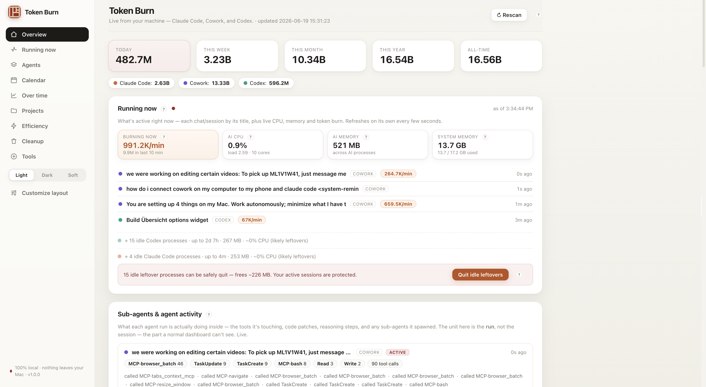

A private dashboard for the tokens your AI coding tools burn — Claude Code, Cowork, and Codex — live, on your own machine. No account, no cloud, no telemetry.

One page, refreshed live from the logs your tools already write. No instrumentation, no SDK.
Every active chat by its title, with live CPU, memory, and token burn rate — like Activity Monitor, for your AI tools.
Tokens grouped by tool, project, session, and day — so you can see exactly what's expensive.
A stock-style chart with 1D / 5D / 1M / All ranges to watch your burn trend at a glance.
What each agent run is really doing inside — tools touched, edits, reasoning, and the sub-agents it spawns.
Finds idle leftover processes you can safely quit to free memory — your active sessions are always protected.
Light, Dark, and Soft themes, plus a drag-to-reorder layout so the page shows what you care about.
No build step, no dependencies to install — just Python 3, which most Macs already have.
Grab the zip and unzip it anywhere — Desktop, Downloads, wherever. It figures out its own location.
install.commandRight-click it → Open. That clears the macOS download warning, checks for Python 3, and starts the dashboard.
Your browser opens to localhost:8799. Use stop.command to stop and uninstall.command to remove it cleanly.